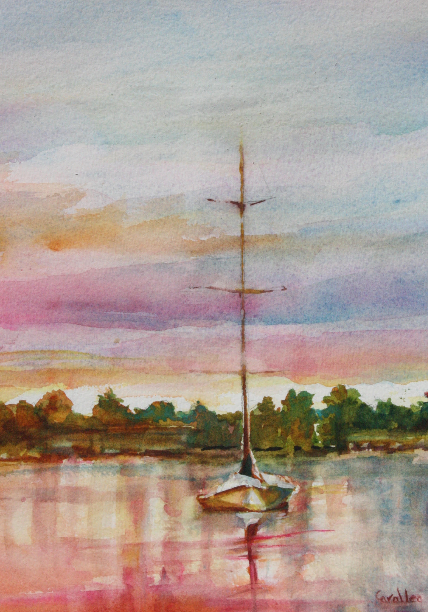
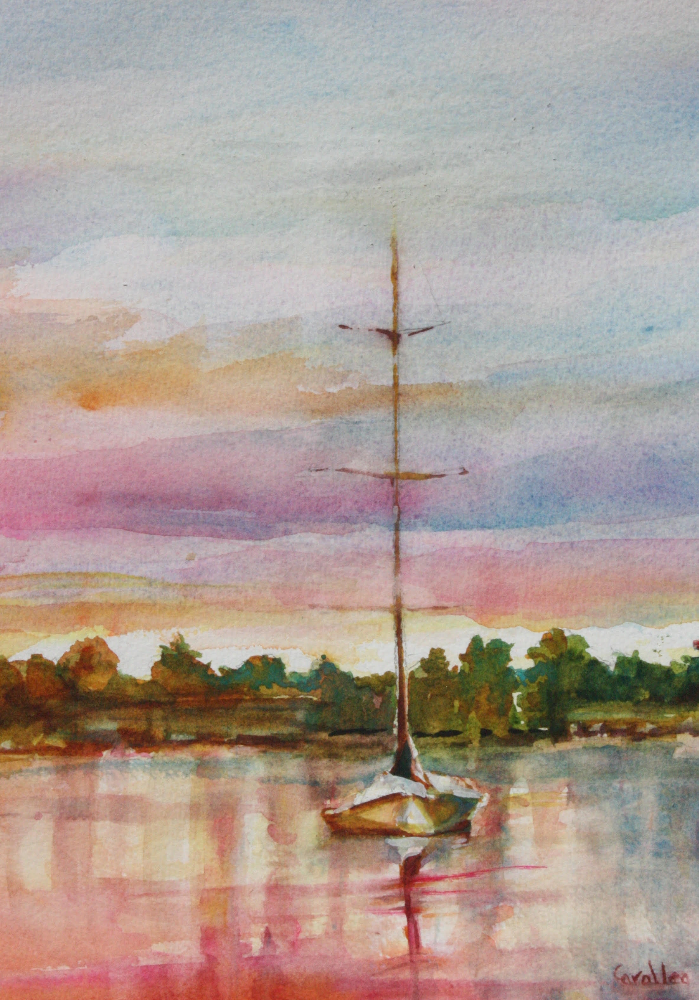

Carol's Colors Watercolor Depictions
About the Artist
 Artist Statement:
I have been painting for the past 20 years. Watercolor is a great way to reflect back the light, glimmer, and sparkle that we see in God's created world. I am only beginning to learn the rudiments of this elusive medium. Effectively painting with water and pigment is a lifelong pursuit that brings joy to the artist and viewers.
Artist Statement:
I have been painting for the past 20 years. Watercolor is a great way to reflect back the light, glimmer, and sparkle that we see in God's created world. I am only beginning to learn the rudiments of this elusive medium. Effectively painting with water and pigment is a lifelong pursuit that brings joy to the artist and viewers.
Artist Bio: Carol Leo enjoys the imagery of God's created world and her art is an expression of the beauty that she sees. Since picking up the paint brush again after a long break, she has concentrated on watercolor painting and finds a never-ending source of inspiration in nature. The purity and strength of this water-based medium lends itself to an honest depiction of trees, animals, skies and water. Her theory is that watercolor has inherent characteristics that lend themselves perfectly to the depiction of living creatures, which are comprised primarily of water.
For two years, Carol majored in art at the University of Maryland. Her formal art education continues today through training by teachers and workshop leaders. She grew up with a legacy of family artists, including her mother, aunt, uncle, and grandparents who had painted for a living as well as a great grandfather, Abbott H. Thayer who was a well-known American artist in the late 19th, early 20th century and is represented in art museums today. Also a naturalist who became known as the father of modern camouflage, Thayer's love of nature continues to be reflected in his offspring of several generations.
Carol is a signature member of BWS (The Baltimore Watercolor Society), WWCA (the Washington Watercolor Association) and a member of LAG (Laurel Art Guild) as well as HoCo (Howard County Arts Council)and MAA (Montgomery County Art Association).
A large amount of her artwork is accomplished in an informal studio in her home, but plein air painting is her passion, and whenever possible her studio is the great outdoors as she participates in outdoor painting events. She sells paintings regularly, as well as note cards reproduced from the paintings; and participates in local art shows.
Carol considers her spiritual journey and salvation experience as her primary inspiration and impetus for doing art. Her thought is that besides being an awesome and loving God, His visual design and artistic principles are the ultimate example of beauty in this physical world.


 
